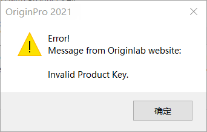

Letztes Update: 09.05.2021
Falls Sie die folgenden Fehlermeldungen sehen, wenn Sie Ihr Origin aktivieren:
| Invalid Produc Key | Failed to activate. Cracked serial number detected. |
|  | |
Bitte überprüfen Sie zweimal, ob Sie Origin mit der korrekten Seriennummer installiert haben:
Sie können Hilfe: Über Origin auswählen, um die installierte Seriennummer anzuzeigen. Prüfen Sie, ob es die gleiche Nummer ist, die Sie von OriginLab erhalten haben. Falls nicht, befolgen Sie bitte die Anweisungen auf dieser Seite der Schnellhilfe, um sie zu korrigieren.
Schlüsselwörter:Lizenz, LE, Lernausgabe, Fehler, kann nicht aktiviert werden, knacken, stehlen